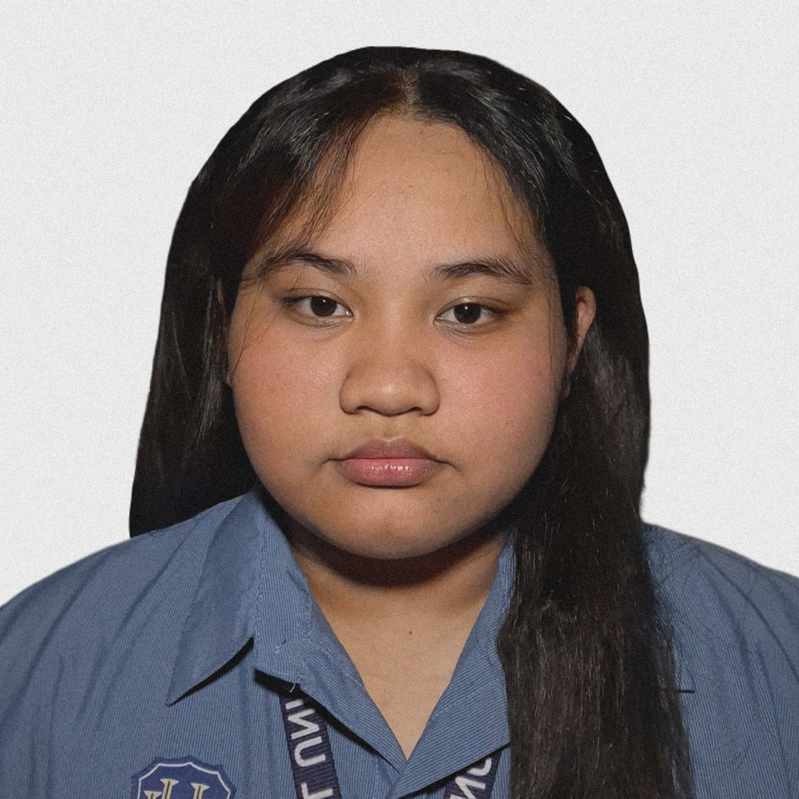

My name is Alecsandrea Terese E. Piquero, but I prefer to be called Alex. I am currently a first-year Bachelor of Science in Information Technology (BSIT) student at National University Fairview.
I consider myself a creative and curious person who enjoys exploring different things. Some of my hobbies include playing video games, listening to music, drawing, and reading books.
As for my future, I am still exploring the opportunities that life may bring. Although I am currently pursuing Information Technology, I have also dreamed of becoming an architect someday. I hope to build a future where I can combine my creativity, problem-solving skills, and knowledge to create something meaningful.
Above all, I see myself as someone who is still learning, growing, and discovering her potential. I may not have everything figured out yet, but I believe that every experience, challenge, and opportunity helps shape the person I am becoming.